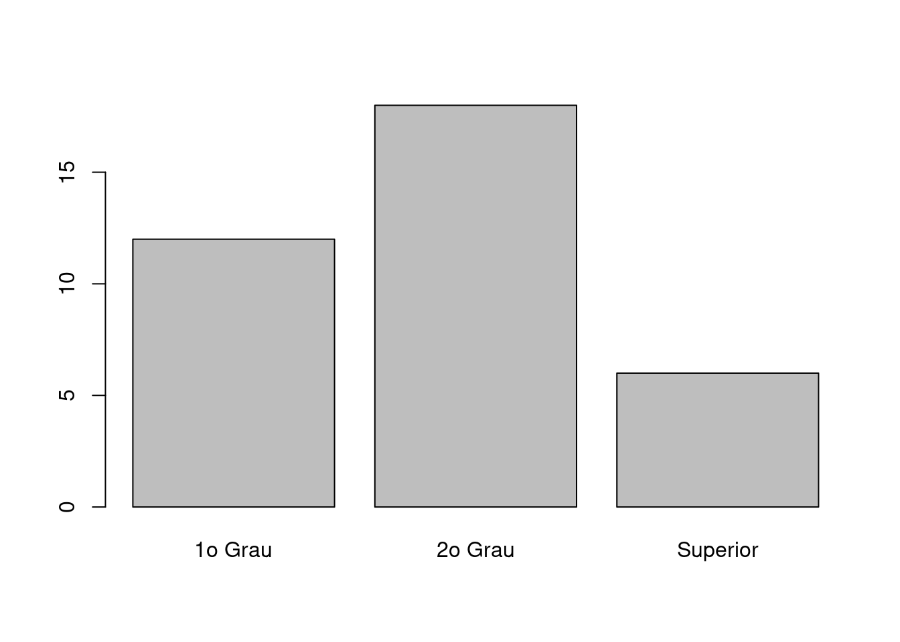
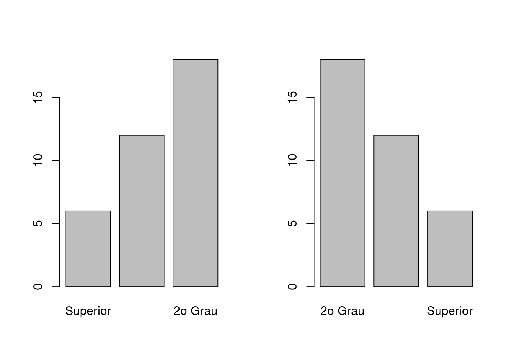

6 Análise exploratória de dados
Nesta sessão vamos ver alguns (mas não todos!) comandos do R para fazer uma análise exploratória descritiva de um conjunto de dados.
Uma boa forma de iniciar uma análise descritiva adequada é verificar os tipos de de variáveis disponíveis. Variáveis podem ser classificadas da seguinte forma:
- Qualitativas
- Nominais
- Ordinais
- Quantitativas
- Discretas
- Contínuas
e podem ser resumidas por tabelas, gráficos e/ou medidas.
6.1 O conjunto de dados milsa
O livro “Estatística Básica” de W. O. Bussab e P. A. Morettin traz no segundo capítulo um conjunto de dados hipotético de atributos de 36 funcionários da companhia “Milsa”. Os dados estão reproduzidos na tabela abaixo. Consulte o livro para mais detalhes sobre este dados.
| Funcionario | Est.civil | Inst | Filhos | Salario | Anos | Meses | Regiao |
|---|---|---|---|---|---|---|---|
| 1 | solteiro | 1o Grau | NA | 4.00 | 26 | 3 | interior |
| 2 | casado | 1o Grau | 1 | 4.56 | 32 | 10 | capital |
| 3 | casado | 1o Grau | 2 | 5.25 | 36 | 5 | capital |
| 4 | solteiro | 2o Grau | NA | 5.73 | 20 | 10 | outro |
| 5 | solteiro | 1o Grau | NA | 6.26 | 40 | 7 | outro |
| 6 | casado | 1o Grau | 0 | 6.66 | 28 | 0 | interior |
| 7 | solteiro | 1o Grau | NA | 6.86 | 41 | 0 | interior |
| 8 | solteiro | 1o Grau | NA | 7.39 | 43 | 4 | capital |
| 9 | casado | 2o Grau | 1 | 7.59 | 34 | 10 | capital |
| 10 | solteiro | 2o Grau | NA | 7.44 | 23 | 6 | outro |
| 11 | casado | 2o Grau | 2 | 8.12 | 33 | 6 | interior |
| 12 | solteiro | 1o Grau | NA | 8.46 | 27 | 11 | capital |
| 13 | solteiro | 2o Grau | NA | 8.74 | 37 | 5 | outro |
| 14 | casado | 1o Grau | 3 | 8.95 | 44 | 2 | outro |
| 15 | casado | 2o Grau | 0 | 9.13 | 30 | 5 | interior |
| 16 | solteiro | 2o Grau | NA | 9.35 | 38 | 8 | outro |
| 17 | casado | 2o Grau | 1 | 9.77 | 31 | 7 | capital |
| 18 | casado | 1o Grau | 2 | 9.80 | 39 | 7 | outro |
| 19 | solteiro | Superior | NA | 10.53 | 25 | 8 | interior |
| 20 | solteiro | 2o Grau | NA | 10.76 | 37 | 4 | interior |
| 21 | casado | 2o Grau | 1 | 11.06 | 30 | 9 | outro |
| 22 | solteiro | 2o Grau | NA | 11.59 | 34 | 2 | capital |
| 23 | solteiro | 1o Grau | NA | 12.00 | 41 | 0 | outro |
| 24 | casado | Superior | 0 | 12.79 | 26 | 1 | outro |
| 25 | casado | 2o Grau | 2 | 13.23 | 32 | 5 | interior |
| 26 | casado | 2o Grau | 2 | 13.60 | 35 | 0 | outro |
| 27 | solteiro | 1o Grau | NA | 13.85 | 46 | 7 | outro |
| 28 | casado | 2o Grau | 0 | 14.69 | 29 | 8 | interior |
| 29 | casado | 2o Grau | 5 | 14.71 | 40 | 6 | interior |
| 30 | casado | 2o Grau | 2 | 15.99 | 35 | 10 | capital |
| 31 | solteiro | Superior | NA | 16.22 | 31 | 5 | outro |
| 32 | casado | 2o Grau | 1 | 16.61 | 36 | 4 | interior |
| 33 | casado | Superior | 3 | 17.26 | 43 | 7 | capital |
| 34 | solteiro | Superior | NA | 18.75 | 33 | 7 | capital |
| 35 | casado | 2o Grau | 2 | 19.40 | 48 | 11 | capital |
| 36 | casado | Superior | 3 | 23.30 | 42 | 2 | interior |
Estes dados estão disponíveis em um arquivo csv no endereço http://www.leg.ufpr.br/~fernandomayer/data/milsa.csv.
O nosso objetivo é, através do R,
- Entrar com os dados
- Fazer uma análise descritiva
Estes são dados no “estilo planilha”, com variáveis de diferentes tipos: categóricas e numéricas (qualitativas e quantitativas). Portanto o formato ideal de armazenamento destes dados no R é o data.frame.
Para importar os dados do endereço acima diretamente para o R, usamos
url <- "http://www.leg.ufpr.br/~fernandomayer/data/milsa.csv"
milsa <- read.csv(url)E para conferir a estrutura dos dados podemos usar algumas funções como:
str(milsa)
'data.frame': 36 obs. of 8 variables:
$ Funcionario: int 1 2 3 4 5 6 7 8 9 10 ...
$ Est.civil : Factor w/ 2 levels "casado","solteiro": 2 1 1 2 2 1 2 2 1 2 ...
$ Inst : Factor w/ 3 levels "1o Grau","2o Grau",..: 1 1 1 2 1 1 1 1 2 2 ...
$ Filhos : int NA 1 2 NA NA 0 NA NA 1 NA ...
$ Salario : num 4 4.56 5.25 5.73 6.26 6.66 6.86 7.39 7.59 7.44 ...
$ Anos : int 26 32 36 20 40 28 41 43 34 23 ...
$ Meses : int 3 10 5 10 7 0 0 4 10 6 ...
$ Regiao : Factor w/ 3 levels "capital","interior",..: 2 1 1 3 3 2 2 1 1 3 ...
head(milsa)
Funcionario Est.civil Inst Filhos Salario Anos Meses Regiao
1 1 solteiro 1o Grau NA 4.00 26 3 interior
2 2 casado 1o Grau 1 4.56 32 10 capital
3 3 casado 1o Grau 2 5.25 36 5 capital
4 4 solteiro 2o Grau NA 5.73 20 10 outro
5 5 solteiro 1o Grau NA 6.26 40 7 outro
6 6 casado 1o Grau 0 6.66 28 0 interior
tail(milsa)
Funcionario Est.civil Inst Filhos Salario Anos Meses Regiao
31 31 solteiro Superior NA 16.22 31 5 outro
32 32 casado 2o Grau 1 16.61 36 4 interior
33 33 casado Superior 3 17.26 43 7 capital
34 34 solteiro Superior NA 18.75 33 7 capital
35 35 casado 2o Grau 2 19.40 48 11 capital
36 36 casado Superior 3 23.30 42 2 interiorPodemos classificar todas a svariáveis desse conjunto de dados como:
| Variável | Classificação |
|---|---|
Funcionario |
Quantitativa discreta |
Est.civil |
Qualitativa nominal |
Inst |
Qualitativa ordinal |
Filhos |
Quantitativa discreta |
Salario |
Quantitativa contínua |
Anos |
Quantitativa contínua |
Meses |
Quantitativa contínua |
Regiao |
Qualitativa nominal |
Como a variável Inst é qualitativa ordinal, podemos indicar para o R que ela deve ser tratada como ordinal. Se observarmos os níveis desse fator:
levels(milsa$Inst)
[1] "1o Grau" "2o Grau" "Superior"já notamos que a ordenação está correta (da esquerda para a direita), pois sabemos que a classificação interna dos níveis é por ordem alfabética, e nesse caso, por coincidência, a ordem já está na sequência correta. Mesmo assim, podemos indicar que este fator é ordinal, usando o argumento ordered da função factor()
milsa$Inst <- factor(milsa$Inst, ordered = TRUE)Note agora a modificação na classe dessa coluna, e a representação dos níveis:
class(milsa$Inst)
[1] "ordered" "factor"
milsa$Inst
[1] 1o Grau 1o Grau 1o Grau 2o Grau 1o Grau 1o Grau 1o Grau
[8] 1o Grau 2o Grau 2o Grau 2o Grau 1o Grau 2o Grau 1o Grau
[15] 2o Grau 2o Grau 2o Grau 1o Grau Superior 2o Grau 2o Grau
[22] 2o Grau 1o Grau Superior 2o Grau 2o Grau 1o Grau 2o Grau
[29] 2o Grau 2o Grau Superior 2o Grau Superior Superior 2o Grau
[36] Superior
Levels: 1o Grau < 2o Grau < SuperiorA coluna continua sendo um factor, mas agora também é ordered (sim, um objeto pode ter mais de uma classe, se elas foram compatíveis e/ou complementares). Os níveis agora são representados por
1o Grau < 2o Grau < Superiorpara indicar explicitamente que existe uma ordem nos níveis desse fator.
Podemos ainda definir uma nova variável, chamada Idade, a partir das variáveis Anos e Meses:
milsa$Idade <- milsa$Anos + milsa$Meses/12Os dois comandos acima (de modificação da classe de uma variável, e a criação de uma nova variável) poderiam ser facilmente executadas de uma única vez através do comando transform()
milsa <- transform(milsa,
Inst = factor(Inst, ordered = TRUE),
Idade = Anos + Meses/12)Agora que os dados estão prontos podemos começar a análise descritiva. A seguir mostramos como fazer análises descritivas uni e bi-variadas. Inspecione os comandos mostrados a seguir e os resultados por elas produzidos. Sugerimos ainda que o leitor use o R para reproduzir os resultados mostrados no texto dos capítulos 1 a 3 do livro de Bussab & Morettin, relacionados com este exemplo. Veja os scripts do livro aqui.
6.2 Análise univariada
A análise univariada consiste basicamente em, para cada uma das variáveis individualmente:
- Classificar a variável quanto a seu tipo: qualitativa (nominal ou ordinal) ou quantitativa (discreta ou contínua)
- Obter tabelas, gráficos e/ou medidas que resumam a variável
A partir destes resultados pode-se montar um resumo geral dos dados.
A seguir vamos mostrar como obter tabelas, gráficos e medidas com o R. Para isto vamos selecionar uma variável de cada tipo para que o leitor possa, por analogia, obter resultados para as demais.
6.2.1 Variável Qualitativa Nominal
A variável Est.civil é uma qualitativa nominal. Desta forma podemos obter: (i) uma tabela de frequências (absolutas e/ou relativas), (ii) um gráfico de setores, (iii) a “moda”, i.e. o valor que ocorre com maior frequência.
Já vimos, através do resultado da função str() acima, que esta variável é um fator. A seguir obtemos frequências absolutas e relativas (note duas formas diferentes de obter as frequências relativas).
## Frequência absoluta
civil.tb <- table(milsa$Est.civil)
civil.tb
casado solteiro
20 16
## Frequência relativa, calculando manualmente
civil.tb/length(milsa$Est.civil)
casado solteiro
0.5555556 0.4444444
## Frequência relativa, com a função prop.table()
prop.table(civil.tb)
casado solteiro
0.5555556 0.4444444 Os gráficos de barras e de setores são adequados para representar esta variável. Os comandos barplot() e pie() usam o resultado da função table() para gerar os gráficos:
par(mfrow = c(1,2))
barplot(civil.tb)
pie(civil.tb)
par(mfrow = c(1,1))
A moda de qualquer variável aleatória é definida como o valor mais frequente encontrado na amostra. No R não há uma função pronta para “calcular” a moda, pois ela pode ser obtida facilmente através do uso de funções básicas. Uma opção seria usar os comandos abaixo:
names(civil.tb)[which.max(civil.tb)]
[1] "casado"Deixamos a cargo do leitor entender e interpretar esse comando.
6.2.2 Variável Qualitativa Ordinal
Para exemplificar como obter análises para uma variável qualitativa ordinal vamos selecionar a variável Inst.
As tabelas de frequências são obtidas de forma semelhante à mostrada anteriormente.
## Frequência absoluta
inst.tb <- table(milsa$Inst)
inst.tb
1o Grau 2o Grau Superior
12 18 6
## Frequência relativa
prop.table(inst.tb)
1o Grau 2o Grau Superior
0.3333333 0.5000000 0.1666667 O gráfico de setores não é adequado para este tipo de variável por não expressar a ordem dos possíveis valores. Usamos então apenas um gráfico de barras conforme mostrado abaixo
barplot(inst.tb)Em alguns casos podemos querer mostrar o gráfico de barras com as barras classificadas da menor para a maior, ou vice-versa, independente da ordem dos níveis. Para isso podemos usar a função sort() para ordenar os valores da tabela e fazer o gráfico
par(mfrow = c(1,2))
## Menor para maior
barplot(sort(inst.tb))
## Maior para menor
barplot(sort(inst.tb, decreasing = TRUE))
par(mfrow = c(1,1))
Para uma variável ordinal, além da moda podemos também calcular outras medidas, tais como a mediana conforme exemplificado a seguir. Note que o comando median() não funciona com variáveis não numéricas, e por isso usamos o comando seguinte.
## Moda
names(inst.tb)[which.max(inst.tb)]
[1] "2o Grau"
## Mediana
median(milsa$Inst) # só funciona para variáveis numéricas
Error in median.default(milsa$Inst): need numeric data
median(as.numeric(milsa$Inst)) # traz a mediana da codificação do nível
[1] 2
levels(milsa$Inst)[median(as.numeric(milsa$Inst))] # valor correto
[1] "2o Grau"6.2.3 Variável quantitativa discreta
Vamos agora usar a variável Filhos (número de filhos) para ilustrar algumas análises que podem ser feitas com uma quantitativa discreta.
Frequências absolutas e relativas são obtidas como anteriormente. Também vamos calcular a frequência acumulada, onde a frequência em uma classe é a soma das frequências das classes anteriores. Para isso usamos a função cumsum(), que já faz a soma acumulada.
## Frequência absoluta
filhos.tb <- table(milsa$Filhos)
filhos.tb
0 1 2 3 5
4 5 7 3 1
## Frequência relativa
filhos.tbr <- prop.table(filhos.tb)
filhos.tbr
0 1 2 3 5
0.20 0.25 0.35 0.15 0.05
## Frequência acumulada
filhos.tba <- cumsum(filhos.tbr)
filhos.tba
0 1 2 3 5
0.20 0.45 0.80 0.95 1.00 O gráfico adequado para frequências absolutas de uma variável discreta é parecido com um gráfico de barras, mas nesse caso, as frequências são indicadas por linhas. Usando a função plot() em um objeto resultado da função table(), o gráfico adequado já é selecionado:
plot(filhos.tb)
Outra possibilidade seria fazer gráficos de frequências relativas e de frequências acumuladas conforme mostrado na
par(mfrow = c(1,2))
## Frequência relativa
plot(filhos.tbr)
## Frequência relativa acumulada
plot(filhos.tba, type = "S") # tipo step (escada)
par(mfrow = c(1,1))
Sendo a variável numérica há uma maior diversidade de medidas estatísticas que podem ser calculadas.
A seguir mostramos como obter algumas medidas de posição: moda, mediana, média e média aparada. Note que o argumento na.rm = TRUE é necessário porque não há informação sobre número de filhos para alguns indivíduos (NA). Para calcular a média aparada, usamos o argumento trim = 0.1 que indica que a média deve ser calculada excluindo-se 10% dos menores e 10% dos maiores valores do vetor de dados. Ao final mostramos como obter os quartis, incluido o mínimo e o máximo.
## Moda
names(filhos.tb)[which.max(filhos.tb)]
[1] "2"
## Mediana
median(milsa$Filhos, na.rm = TRUE)
[1] 2
## Média
mean(milsa$Filhos, na.rm = TRUE)
[1] 1.65
## Média aparada
mean(milsa$Filhos, trim = 0.1, na.rm = TRUE)
[1] 1.5625
## Quartis
quantile(milsa$Filhos, na.rm = TRUE)
0% 25% 50% 75% 100%
0 1 2 2 5 Passando agora para medidas de dispersão, vejamos como obter máximo e mínimo, e com isso a amplitude, além da variância, desvio padrão, e coeficiente de variação. Também obtemos os quartis para calcular a amplitude interquartílica.
## Máximo e mínimo
max(milsa$Filhos, na.rm = TRUE)
[1] 5
min(milsa$Filhos, na.rm = TRUE)
[1] 0
## As duas informações juntas
range(milsa$Filhos, na.rm = TRUE)
[1] 0 5
## Amplitude é a diferença entre máximo e mínimo
diff(range(milsa$Filhos, na.rm = TRUE))
[1] 5
## Variância
var(milsa$Filhos, na.rm = TRUE)
[1] 1.607895
## Desvio-padrão
sd(milsa$Filhos, na.rm = TRUE)
[1] 1.268028
## Coeficiente de variação
sd(milsa$Filhos, na.rm = TRUE)/mean(milsa$Filhos, na.rm = TRUE)
[1] 0.7685018
## Quartis
(filhos.qt <- quantile(milsa$Filhos, na.rm = TRUE))
0% 25% 50% 75% 100%
0 1 2 2 5
## Amplitude interquartílica
filhos.qt[4] - filhos.qt[2]
75%
1 Finalmente, podemos usar a função genérica summary() para resumir od dados de uma só vez
summary(milsa$Filhos)
Min. 1st Qu. Median Mean 3rd Qu. Max. NA's
0.00 1.00 2.00 1.65 2.00 5.00 16 6.2.4 Variável quantitativa contínua
Para concluir os exemplos para análise univariada vamos considerar a variável quantitativa contínua Salario.
Para se fazer uma tabela de frequências de uma VA contínua, é preciso primeiro agrupar os dados em classes. Nos comandos mostrados a seguir verificamos inicialmente os valores máximo e mínimo dos dados, depois usamos o critério de Sturges para definir o número de classes. Usamos a função cut() para agrupar os dados em classes e finalmente obtemos as frequências absolutas e relativas.
## Máximo e mínimo
range(milsa$Salario)
[1] 4.0 23.3
## Número de classes estimado, com base no critério de Sturges. Veja
## outras opções em ?nclass
nclass.Sturges(milsa$Salario)
[1] 7
## Criando as classes com a função cut(), usando os valores mínimos e
## máximos dados em range()
cut(milsa$Salario, breaks = seq(4, 23.3, length.out = 8))
[1] <NA> (4,6.76] (4,6.76] (4,6.76] (4,6.76]
[6] (4,6.76] (6.76,9.51] (6.76,9.51] (6.76,9.51] (6.76,9.51]
[11] (6.76,9.51] (6.76,9.51] (6.76,9.51] (6.76,9.51] (6.76,9.51]
[16] (6.76,9.51] (9.51,12.3] (9.51,12.3] (9.51,12.3] (9.51,12.3]
[21] (9.51,12.3] (9.51,12.3] (9.51,12.3] (12.3,15] (12.3,15]
[26] (12.3,15] (12.3,15] (12.3,15] (12.3,15] (15,17.8]
[31] (15,17.8] (15,17.8] (15,17.8] (17.8,20.5] (17.8,20.5]
[36] (20.5,23.3]
7 Levels: (4,6.76] (6.76,9.51] (9.51,12.3] (12.3,15] ... (20.5,23.3]Note que uma das classes é NA. Isso ocorre pela definição das classes, que por padrão é no formato (a,b], ou seja, o intervalo é aberto em a (não inclui a) e fechado em b (inclui b). Podemos alterar esse padrão usando o argumento include.lowest = TRUE,
cut(milsa$Salario, breaks = seq(4, 23.3, length.out = 8),
include.lowest = TRUE)
[1] [4,6.76] [4,6.76] [4,6.76] [4,6.76] [4,6.76]
[6] [4,6.76] (6.76,9.51] (6.76,9.51] (6.76,9.51] (6.76,9.51]
[11] (6.76,9.51] (6.76,9.51] (6.76,9.51] (6.76,9.51] (6.76,9.51]
[16] (6.76,9.51] (9.51,12.3] (9.51,12.3] (9.51,12.3] (9.51,12.3]
[21] (9.51,12.3] (9.51,12.3] (9.51,12.3] (12.3,15] (12.3,15]
[26] (12.3,15] (12.3,15] (12.3,15] (12.3,15] (15,17.8]
[31] (15,17.8] (15,17.8] (15,17.8] (17.8,20.5] (17.8,20.5]
[36] (20.5,23.3]
7 Levels: [4,6.76] (6.76,9.51] (9.51,12.3] (12.3,15] ... (20.5,23.3]E note que agora a primeira classe fica [a,b], ou seja, fechada (incluindo) os dois lados. Para que o intervalo seja fechado à esquerda, usamos o argumento right = FALSE. As combinações possíveis para esses dois argumentos, e as classes resultantes são apresentadas na tabela abaixo:
| Argumentos | Resultado |
|---|---|
include.lowest = T, right = T |
[a,b], ..., (y,z] |
include.lowest = F, right = T |
(a,b], ..., (y,z] |
include.lowest = F, right = F |
[a,b), ..., [y,z) |
include.lowest = T, right = F |
[a,b), ..., [y,z] |
Outra opção para “acomodar” todos os extremos dentro das classes, seria naturalmente atribuir valores um pouco menores que o mínimo, e um pouco maiores que o máximo. Abaixo, usamos essa abordagem e fazemos uma tabela com as frequências absolutas e relativas.
salario.cut <- cut(milsa$Salario,
breaks = seq(3.5, 23.5, length.out = 8))
salario.cut
[1] (3.5,6.36] (3.5,6.36] (3.5,6.36] (3.5,6.36] (3.5,6.36]
[6] (6.36,9.21] (6.36,9.21] (6.36,9.21] (6.36,9.21] (6.36,9.21]
[11] (6.36,9.21] (6.36,9.21] (6.36,9.21] (6.36,9.21] (6.36,9.21]
[16] (9.21,12.1] (9.21,12.1] (9.21,12.1] (9.21,12.1] (9.21,12.1]
[21] (9.21,12.1] (9.21,12.1] (9.21,12.1] (12.1,14.9] (12.1,14.9]
[26] (12.1,14.9] (12.1,14.9] (12.1,14.9] (12.1,14.9] (14.9,17.8]
[31] (14.9,17.8] (14.9,17.8] (14.9,17.8] (17.8,20.6] (17.8,20.6]
[36] (20.6,23.5]
7 Levels: (3.5,6.36] (6.36,9.21] (9.21,12.1] (12.1,14.9] ... (20.6,23.5]
## Tabela com as frequencias absolutas por classe
salario.tb <- table(salario.cut)
salario.tb
salario.cut
(3.5,6.36] (6.36,9.21] (9.21,12.1] (12.1,14.9] (14.9,17.8] (17.8,20.6]
5 10 8 6 4 2
(20.6,23.5]
1
## Tabela com as frequências relativas
prop.table(salario.tb)
salario.cut
(3.5,6.36] (6.36,9.21] (9.21,12.1] (12.1,14.9] (14.9,17.8] (17.8,20.6]
0.13888889 0.27777778 0.22222222 0.16666667 0.11111111 0.05555556
(20.6,23.5]
0.02777778 Na sequência vamos mostrar dois possíveis gráficos para variáveis contínuas: o histograma e o box-plot.
Para fazer um histograma usamos a função hist(), por exemplo,
hist(milsa$Salario)
A função hist() possui vários argumentos para alterar o comportamento da saída do gráfico. Por exemplo, com labels = TRUE as frequências são mostradas acima de cada barra. Com freq = FALSE, o gráfico é feito com as frequências relativas.
hist(milsa$Salario, freq = FALSE, labels = TRUE)
Por padrão, a função hist() calcula automaticamente o número de classes e os valores limites de cada classe. No entanto, isto pode ser alterado com o argumento breaks, que pode receber um vetor definindo os limites das classes, uma função para definir as quebras, um nome de critério (por exemplo, "Sturges"), ou um único escalar definido o número de classes. As últimas três opções são apenas sugestões utilizadas pela função. O argumento nclass também funciona dessa forma, recebendo apenas um valor com o número de classes (como sugestão).
hist(milsa$Salario, nclass = 15)
Assim como na função cut(), os argumentos include.lowest e right são utilizados para controlar a borda das classes.
Uma característica importante da função hist() é que ela retorna não apenas o gráfico, mas também uma lista com as informações utilizadas para construir o gráfico. Associando um histograma a um objeto, podemos ver o seu conteúdo:
salario.hist <- hist(milsa$Salario)
salario.hist
$breaks
[1] 4 6 8 10 12 14 16 18 20 22 24
$counts
[1] 4 6 8 5 4 3 3 2 0 1
$density
[1] 0.05555556 0.08333333 0.11111111 0.06944444 0.05555556 0.04166667
[7] 0.04166667 0.02777778 0.00000000 0.01388889
$mids
[1] 5 7 9 11 13 15 17 19 21 23
$xname
[1] "milsa$Salario"
$equidist
[1] TRUE
attr(,"class")
[1] "histogram"Estas informações podem então ser utilizadas para outros propósitos dentro do R.
Os boxplots são úteis para revelar o centro, a dispersão e a distribuição dos dados, além de outliers. São construídos da seguinte forma:
- A linha central mais escura representa a mediana. Os extremos da caixa são o \(1^{o}\) (\(q1\)) e o \(3^{o}\) (\(q3\)) quartis.
- As linhas que se extendem das caixas são definidas como: \[q1-1,5\cdot IQR\ \qquad \mathrm{e}\ \qquad q3+1,5\cdot IQR\] onde \(IQR\) é o intervalo inter-quartil. As linhas vão até os valores máximo e mínimo que ainda se encontram dentro deste intervalo.
boxplot(milsa$Salario)
Existem também vários argumentos que permitem variações do boxplot, tais como caixas com tamanho proporcional aos tamanhos dos grupos (varwidth = TRUE), e caixas “acinturadas” (notched boxplot) (notch = TRUE).
boxplot(milsa$Salario, varwidth = TRUE, notch = TRUE)Ambas opções são úteis quando há mais de um grupo e a comparação entre os boxplots é facilitada.
Finalmente, podemos obter as medidas de posição e dispersão da mesma forma que para variáveis discretas. Veja alguns exemplos a seguir. Note que aqui não é necessário o uso do argumento na.rm = TRUE, pois não existem NAs nesta variável.
## Mediana
median(milsa$Salario)
[1] 10.165
## Média
mean(milsa$Salario)
[1] 11.12222
## Média aparada
mean(milsa$Salario, trim = 0.1)
[1] 10.838
## Quartis
quantile(milsa$Salario)
0% 25% 50% 75% 100%
4.0000 7.5525 10.1650 14.0600 23.3000
## Máximo e mínimo
max(milsa$Salario)
[1] 23.3
min(milsa$Salario)
[1] 4
## As duas informações juntas
range(milsa$Salario)
[1] 4.0 23.3
## Amplitude é a diferença entre máximo e mínimo
diff(range(milsa$Salario))
[1] 19.3
## Variância
var(milsa$Salario)
[1] 21.04477
## Desvio-padrão
sd(milsa$Salario)
[1] 4.587458
## Coeficiente de variação
sd(milsa$Salario)/mean(milsa$Salario)
[1] 0.4124587
## Quartis
salario.qt <- quantile(milsa$Salario)
## Amplitude interquartílica
salario.qt[4] - salario.qt[2]
75%
6.5075 6.3 Análise Bivariada
Na análise bivariada procuramos identificar relações entre duas variáveis. Assim como na análise univariada, estas relações podem ser resumidas por gráficos, tabelas e/ou medidas estatísticas. O tipo de resumo vai depender dos tipos das variáveis envolvidas. Vamos considerar três possibilidades:
- Qualitativa vs qualitativa
- Qualitativa vs quantitativa
- Quantitativa vs quantitativa
Salienta-se ainda que:
- As análise mostradas a seguir não esgotam as possibilidades de análises envolvendo duas variáveis e devem ser vistas apenas como uma sugestão inicial
- Relações entre duas variáveis devem ser examinadas com cautela pois podem ser mascaradas por uma ou mais variáveis adicionais não considerada na análise. Estas são chamadas variáveis de confundimento. Análises com variáveis de confundimento não serão discutidas neste ponto.
Observação: de agora em diante, como serão consideradas mais de uma variável, usaremos a função
with()para chamar a maioria das funções.
6.3.1 Qualitativa vs qualitativa
Vamos considerar as variáveis Est.civil (estado civil), e Inst (grau de instrução). A tabela envolvendo duas variáveis é chamada tabela de cruzamento ou tabela de contingência, e pode ser apresentada de várias formas, conforme discutido a seguir.
A forma mais adequada de apresentação vai depender dos objetivos da análise e da interpretação desejada para os dados. Inicialmente obtemos a tabela de frequências absolutas para o cruzamento das duas variávies, usando a função table(). A tabela extendida incluindo os totais marginais pode ser obtida com a função addmargins().
## Tabela de frequências absolutas
civ.inst.tb <- with(milsa, table(Est.civil, Inst))
civ.inst.tb
Inst
Est.civil 1o Grau 2o Grau Superior
casado 5 12 3
solteiro 7 6 3
addmargins(civ.inst.tb)
Inst
Est.civil 1o Grau 2o Grau Superior Sum
casado 5 12 3 20
solteiro 7 6 3 16
Sum 12 18 6 36Tabelas de frequências relativas são obtidas com prop.table(), mas aqui existem três possibilidades para as proporções em cada casela:
- Em relação ao total geral
- Em relação aos totais por linha (
margin = 1) - Em relação aos totais por coluna (
margin = 2)
## Frequência relativa global
prop.table(civ.inst.tb)
Inst
Est.civil 1o Grau 2o Grau Superior
casado 0.13888889 0.33333333 0.08333333
solteiro 0.19444444 0.16666667 0.08333333
## Frequência relativa por linha
prop.table(civ.inst.tb, margin = 1)
Inst
Est.civil 1o Grau 2o Grau Superior
casado 0.2500 0.6000 0.1500
solteiro 0.4375 0.3750 0.1875
## Frequência relativa por coluna
prop.table(civ.inst.tb, margin = 2)
Inst
Est.civil 1o Grau 2o Grau Superior
casado 0.4166667 0.6666667 0.5000000
solteiro 0.5833333 0.3333333 0.5000000Abaixo são representados quatro tipos de gráficos de barras que podem ser usados para representar o cruzamento das variáveis. A transposição da tabela com t() permite alterar a variável que define os grupos no eixo horizontal. O uso de prop.table() permite o obtenção de gráficos com frequências relativas.
par(mfrow = c(2,2))
barplot(civ.inst.tb, legend = TRUE)
barplot(t(civ.inst.tb), legend = TRUE)
barplot(civ.inst.tb, beside = TRUE, legend = TRUE)
barplot(t(prop.table(civ.inst.tb)), beside = TRUE, legend = TRUE)
par(mfrow = c(1,1))
6.3.2 Qualitativa vs quantitativa
Para exemplificar este caso vamos considerar as variáveis Inst e Salario.
Para se obter uma tabela de frequências é necessário agrupar a variável quantitativa em classes. No exemplo a seguir vamos agrupar a variável salário em 4 classes definidas pelos quartis usando a função cut(). Lembre-se que as classes são definidas por intervalos abertos à esquerda, então usamos o argumento include.lowest = TRUE para garantir que todos os dados, inclusive o menor (mínimo) seja incluído na primeira classe. Após agrupar esta variável, obtemos a(s) tabela(s) de cruzamento como mostrado no caso anterior.
## Quartis de salario
quantile(milsa$Salario)
0% 25% 50% 75% 100%
4.0000 7.5525 10.1650 14.0600 23.3000
## Classificação de acordo com os quartis
salario.cut <- cut(milsa$Salario, breaks = quantile(milsa$Salario),
include.lowest = TRUE)
## Tabela de frequências absolutas
inst.sal.tb <- table(milsa$Inst, salario.cut)
inst.sal.tb
salario.cut
[4,7.55] (7.55,10.2] (10.2,14.1] (14.1,23.3]
1o Grau 7 3 2 0
2o Grau 2 6 5 5
Superior 0 0 2 4
prop.table(inst.sal.tb, margin = 1)
salario.cut
[4,7.55] (7.55,10.2] (10.2,14.1] (14.1,23.3]
1o Grau 0.5833333 0.2500000 0.1666667 0.0000000
2o Grau 0.1111111 0.3333333 0.2777778 0.2777778
Superior 0.0000000 0.0000000 0.3333333 0.6666667No gráfico vamos considerar que neste exemplo a instrução deve ser a variável explicativa e portanto colocada no eixo X, e o salário é a variável resposta, e portanto deve ser colocada no eixo Y. Isto é, consideramos que a instrução deve explicar, ainda que parcialmente, o salário (e não o contrário!).
Vamos então obter um boxplot dos salários para cada nível de instrução. Note que na função abaixo, usamos a notação de fórmula do R, com Salario ~ Inst indicando que a variável Salario é explicada, ou descrita, (\(\sim\)) pela variável Inst.
boxplot(Salario ~ Inst, data = milsa)
Poderíamos ainda fazer gráficos com a variável Salario agrupada em classes, e neste caso os gráficos seriam como no caso anterior com duas variáveis qualitativas.
Para as medidas descritivas, o usual é obter um resumo da variável quantitativa como mostrado na análise univariada, porém agora informando este resumo para cada nível do fator qualitativo de interesse.
A seguir mostramos alguns exemplos de como obter a média, desvio padrão e o resumo de cinco números do salário para cada nível de instrução.
with(milsa, tapply(Salario, Inst, mean))
1o Grau 2o Grau Superior
7.836667 11.528333 16.475000
with(milsa, tapply(Salario, Inst, sd))
1o Grau 2o Grau Superior
2.956464 3.715144 4.502438
with(milsa, tapply(Salario, Inst, quantile))
$`1o Grau`
0% 25% 50% 75% 100%
4.0000 6.0075 7.1250 9.1625 13.8500
$`2o Grau`
0% 25% 50% 75% 100%
5.7300 8.8375 10.9100 14.4175 19.4000
$Superior
0% 25% 50% 75% 100%
10.5300 13.6475 16.7400 18.3775 23.3000 NOTE que aqui usamos a função
tapply(). Para saber mais sobre os recursos dessa função e de outras da família*apply, veja o script_gapminder.R.
6.3.3 Quantitativa vs Quantitativa
Para ilustrar este caso vamos considerar as variáveis Salario e Idade. Para se obter uma tabela é necessário agrupar as variáveis em classes conforme fizemos no caso anterior.
Nos comandos abaixo, agrupamos as duas variáveis em classes definidas pelos respectivos quartis, gerando portanto uma tabela de cruzamento \(4~\times~4\).
## Classes de Idade
idade.cut <- with(milsa, cut(Idade, breaks = quantile(Idade),
include.lowest = TRUE))
table(idade.cut)
idade.cut
[20.8,30.7] (30.7,34.9] (34.9,40.5] (40.5,48.9]
9 9 9 9
## Classes de salario
salario.cut <- with(milsa, cut(Salario, breaks = quantile(Salario),
include.lowest = TRUE))
table(salario.cut)
salario.cut
[4,7.55] (7.55,10.2] (10.2,14.1] (14.1,23.3]
9 9 9 9
## Tabela cruzada
table(idade.cut, salario.cut)
salario.cut
idade.cut [4,7.55] (7.55,10.2] (10.2,14.1] (14.1,23.3]
[20.8,30.7] 4 2 2 1
(30.7,34.9] 1 3 3 2
(34.9,40.5] 1 3 2 3
(40.5,48.9] 3 1 2 3
prop.table(table(idade.cut, salario.cut), margin = 1)
salario.cut
idade.cut [4,7.55] (7.55,10.2] (10.2,14.1] (14.1,23.3]
[20.8,30.7] 0.4444444 0.2222222 0.2222222 0.1111111
(30.7,34.9] 0.1111111 0.3333333 0.3333333 0.2222222
(34.9,40.5] 0.1111111 0.3333333 0.2222222 0.3333333
(40.5,48.9] 0.3333333 0.1111111 0.2222222 0.3333333Caso queiramos definir um número menor de classes podemos fazer como no exemplo a seguir onde cada variável é dividida em 3 classes e gerando um tabela de cruzamento \(3~\times~3\).
idade.cut2 <- with(milsa, cut(Idade,
breaks = quantile(Idade, seq(0, 1, length = 4)),
include.lowest = TRUE))
salario.cut2 <- with(milsa, cut(Salario,
breaks = quantile(Salario, seq(0, 1, length = 4)),
include.lowest = TRUE))
table(idade.cut2, salario.cut2)
salario.cut2
idade.cut2 [4,8.65] (8.65,12.9] (12.9,23.3]
[20.8,32.1] 5 5 2
(32.1,37.8] 4 3 5
(37.8,48.9] 3 4 5
prop.table(table(idade.cut2, salario.cut2), margin = 1)
salario.cut2
idade.cut2 [4,8.65] (8.65,12.9] (12.9,23.3]
[20.8,32.1] 0.4166667 0.4166667 0.1666667
(32.1,37.8] 0.3333333 0.2500000 0.4166667
(37.8,48.9] 0.2500000 0.3333333 0.4166667O gráfico adequado para representar duas variáveis quantitativas é um diagrama de dispersão. Note que se as variáveis envolvidas puderem ser classificadas como “explicativa” e “resposta” devemos colocar a primeira no eixo X e a segunda no eixo Y. Neste exemplo é razoável admitir que a idade deve explicar, ao menos parcialmente, o salário e portanto fazemos o gráfico com idade no eixo X. Note que na função plot(), podemos usar tanto os argumentos x e y, quanto o formato de fórmula (como visto anteriormente).
plot(x = milsa$Idade, y = milsa$Salario)
plot(Salario ~ Idade, data = milsa)
Para quantificar a associação entre variáveis deste tipo, usamos o coeficiente de correlação. A função cor() possui opção para três coeficientes de correlação, tendo como default o coeficiente de correlação linear de Pearson.
with(milsa, cor(Idade, Salario))
[1] 0.3651397
with(milsa, cor(Idade, Salario, method = "kendall"))
[1] 0.214456
with(milsa, cor(Idade, Salario, method = "spearman"))
[1] 0.2895939Exercícios
- Experimente as funções
mean(),var(),sd(),median(),quantile()nos dados mostrados anteriormente (milsa). Veja a documentação das funções e as opções de uso. Carregue o conjunto de dados
womencomdata(women). Veja o que são os dados comhelp(women), e faça uma análise descritiva adequada.- Carregue o conjunto de dados
USArrestscomdata(USArrests). Examine a sua documentação comhelp(USArrests)e responda as perguntas a seguir:- Qual o número médio e mediano de cada um dos crimes?
- Encontre a mediana e quartis para cada crime.
- Encontre o número máximo e mínimo para cada crime.
- Faça um gráfico adequado para o número de assassinatos (
Murder). - Faça um boxplot para o número de estupros (
Rape). - Verifique se há correlação entre os diferentes tipos de crime.
- Verifique se há correlação entre os crimes e a proporção de população urbana.
- Encontre os estados com maior e menor ocorrência de cada tipo de crime.
- Encontre os estados com maior e menor ocorrência per capta de cada tipo de crime.
- Encontre os estados com maior e menor ocorrência do total de crimes.
- Calcule a média de crimes (entre
Murder,AssaulteRape) para cada estado.
A resolução de todos os exercícios desta página está disponível neste script.